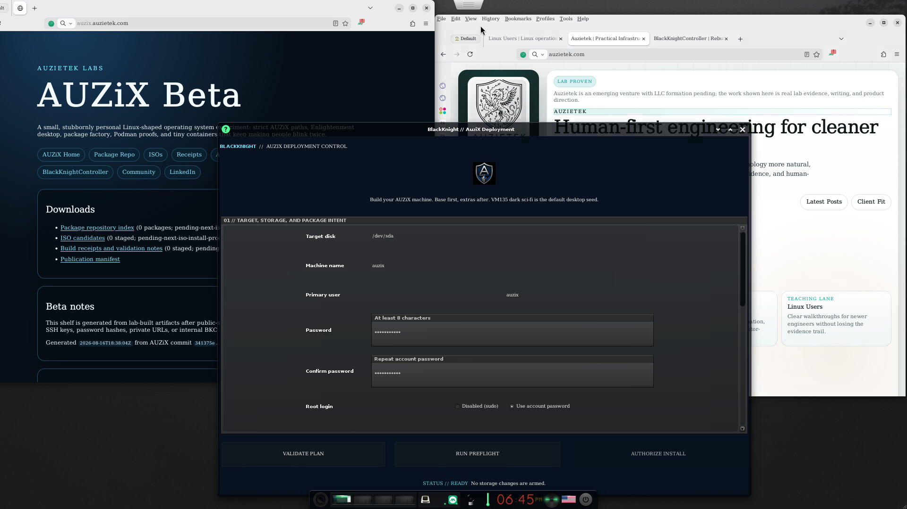

Auzietek Labs
AUZiX Beta
A small, stubbornly personal Linux-shaped operating system experiment: strict AUZiX paths, Enlightenment desktop, package factory, Podman proofs, and tiny containers that keep making people blink twice.
Latest lab proof
The current public run shows the AUZiX installer, Enlightenment desktop, AUZiX path work, Midori rendering Auzietek, and the package-driven workstation direction coming together in one screen.

Downloads
- Package repository index (0 packages; pending-next-iso-install-proof)
- ISO candidates (0 staged; pending-next-iso-install-proof)
- Build receipts and validation notes (0 staged; pending-next-iso-install-proof)
- Publication manifest
Beta notes
This shelf is generated from lab-built artifacts after public-safety checks. Public ISOs must not include lab SSH keys, password hashes, private URLs, or internal BKC addresses.
Generated 2026-08-16T18:48:08Z from AUZiX commit
5692793.
Community
Start at Auzietek or the Linux Users field notes. Join the Auzietek community, or use the Discord channel if you are already inside. Professional contact is on LinkedIn.